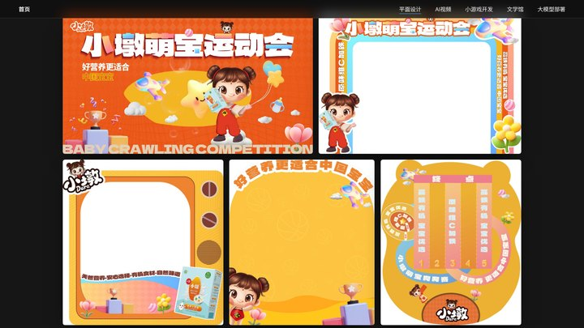
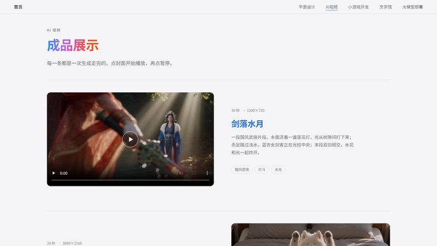
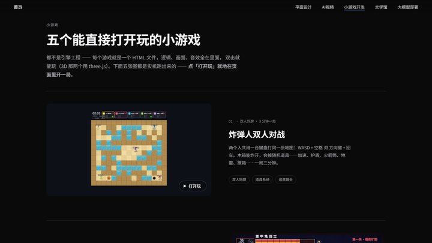
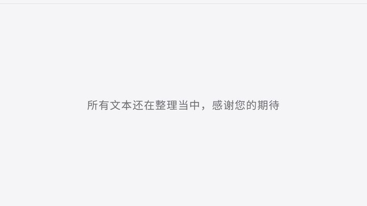
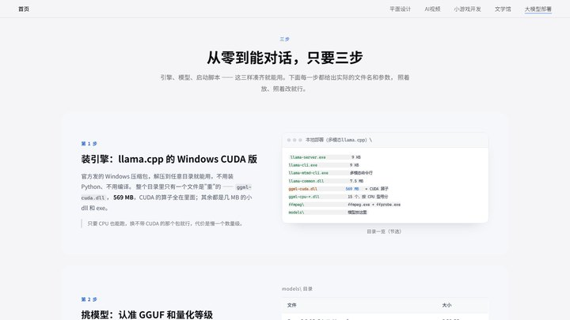

精选作品
鼠标左拉查看左右滑动查看
把想法做成东西
平面设计是看家的手艺，另外四个方向是我这几年自己趟出来的。它们看起来不一样，做的其实是同一件事，我只是把一个模糊的念头，变成能拿出手的成品。
-
平面设计
品牌视觉、营销物料、终端规范。在运营商行业做了多年落地设计， 习惯从传播意图倒推画面，而不是从好看出发。

-
AI视频
用提示词调度视频模型，把脚本拆成分镜再生成成片。 擅长长镜头的时间分段控制、首尾帧接力，以及中文文字渲染的降风险方案。

-
小游戏开发
从 0 到 1 的开发。我只有一个想法，用我的美感配合AI就开发出来了，尽管不够完美，但一个人完成从设计到代码落地。

-
文学馆
平时积攒的学习资料和笔记都放在这了，如果是文献我会编著好并写明出处的。也会经常写点我自己的总结、见解和碎碎念。

-
大模型部署
我把模型在本地跑起来，我自己动手搞 llama.cpp 搭配量化模型，我跑通过多模态推理和Agent。如果你有足够的钱，你可以做一个不是只做个只会调 API 的“伸手党”。

关于
我是一个平面设计师。
工作日常就是给运营商做品牌和营销，从前期的视觉创意到后期的落地执行。
我想知道 AI 究竟能替人做到哪一步，因此开始研究各种 AI，自己搞过本地模型部署、玩过 AI 视频，主力一直用 Cherry Studio，于是越来越上头，根本停不下来。
现在呢，我一直在尝试用自己的方式把自己曾经敢想不敢做的事做出来。
也许这片网页就是我孩童的倒影，也是我发自内心的一次兴趣活动。